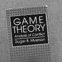
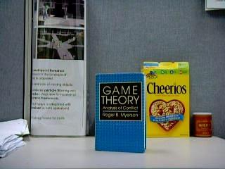
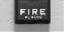
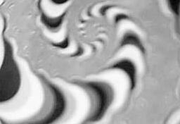
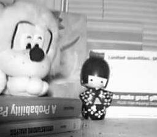

Virtual Focus Demos
Results presented partially in the following paper:
Junlan Yang, Dan Schonfeld and Magdi Mohamed, ”Focused Video Estimation from Defocused Video Sequences”, SPIE Proceedings of Electronic Imaging: Science and Technology, Conference on Visual Communications and Image Processing (VCIP), San Jose, CA, 2008.
Junlan Yang, Dan Schonfeld and Magdi Mohamed, ”Robust Focused Image Estimation from Multiple Images in Video Sequences”, IEEE International Conference on Image Processing, San Antonio, TX, 2007.
For viewing purpose mainly. Download permitted, however, proper citations must be provided in the case of academic usage, publication and modification of the presented videos. Commercial usage prohibited. Copyright belongs to Junlan Yang, ECE,University of Illinois, Chicago.
Back to Projects
BOOK

Reconstructed first frame using increasing number of frames
SOCCER
DESK

Original Video (sample frames)
Synthetically blurred Video (sample frames)
Reconstructed Video (sample frames)
ALARM

Synthetically blurred Image Sequences
Reconstructed first frame using different methods
SPIRAL

Original Real-blur Video (sample frames)
Reconstructed Video (sample frames)
ToynBook
